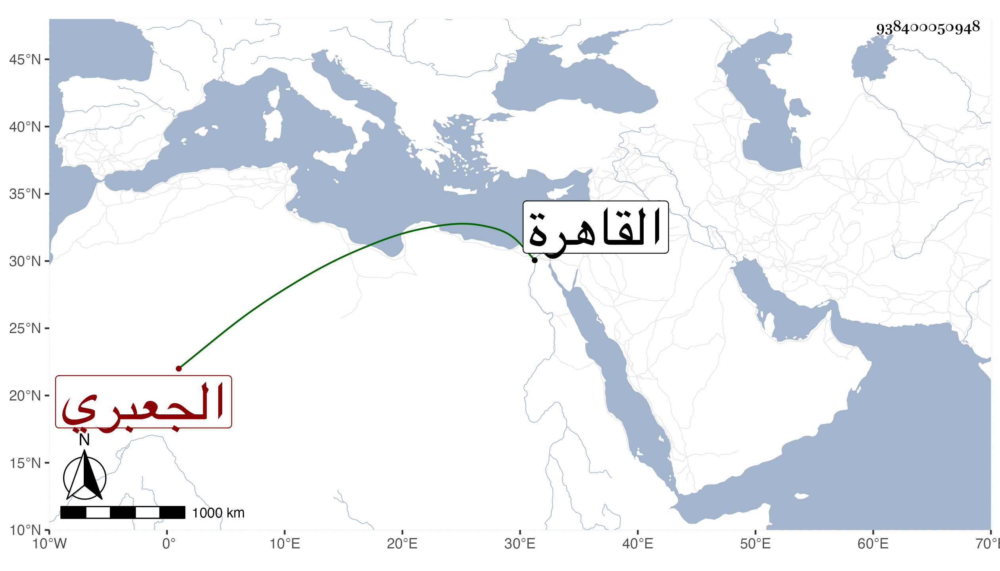

0902Sakhawi.DawLamic.ITO20230111-ara1.EIS1600.938400050948
Biography ID: 938400050948
93
عبد الباسط بن محمد بن محمد بن علي بن محمد بن الزين إبراهيم الجعبري الخليل الآتي أبوه وعمه عمر . ولد سنة سبع وعشرين وثمانمائة تقريبا وأجاز له التدمري والقبابي وشيخنا وآخرون وقرأ على إمام الكاملية وغيره من العجم وغيرهم بل حضر دروس المناوي والعلم البلقيني وبرع في الفقه وأصله وأتقن الفرائض والعربية والميقات وأذن له ابن البلقيني في الافتاء والتدريس ودرس وأفتى واستقر في مشيخة الخليل شريكا لعمه برغبة أبيه له عنها ، وقدم القاهرة غير مرة منها في سنة تسع وثمانين ومات في بلده بالطاعون سنة سبع وتسعين .
